Supreme Deputy
International Order of the Rainbow for Girls (South Carolina)
Laurens, South Carolina
Life Coach · Leader · Retired
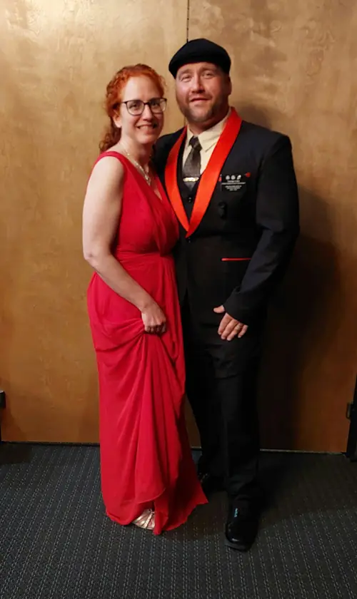
About me
I created this page to give everyone a little info about me & a way to contact me. For those who don’t know, my name is George Latta.
I worked most of my life in law enforcement. I’ve been retired for a little while now. That being said, I think I work more now than I ever did.
I do a great deal with Freemasonry, York Rite, Rainbow Girls, DeMolay plus many other branches. It keeps me busy to say the least.
My loving family support me in my endeavors. My wife Patricia, daughters Jessica and Jasmine, my parents George SR & Theresa. I cherish them & their support dearly.
I have lived in the Laurens area since 2003. Before then I was a wandering soul. Now I just save it for traveling.
Current roles
International Order of the Rainbow for Girls (South Carolina)
Grand Royal Arch Chapter of South Carolina
Masonic & fraternal service
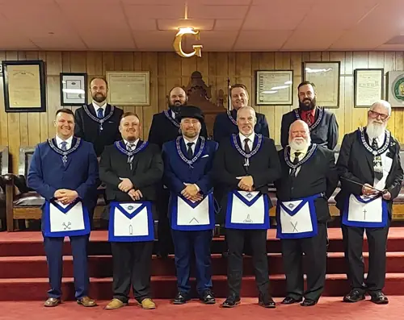
It was a great honor to serve as WM for 2023 & 2024. The brothers at Palmetto 19 are some of the best ones you’ll ever meet.
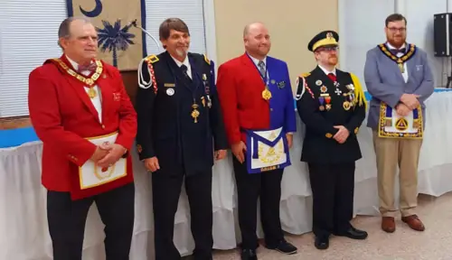
I’ve enjoyed serving the York Rite in my local bodies. Serving as High Priest, Illustrious Master & Eminent Commander. I’ve also had the opportunity to serve at state level as Grand Master of the Third Veil, Grand Captain of the Host, District Deputy Illustrious Grand Master & District Representative of the 3rd district for all 3 Grand Bodies of South Carolina. I plan to continue to work within the York Rite to help foster its growth.
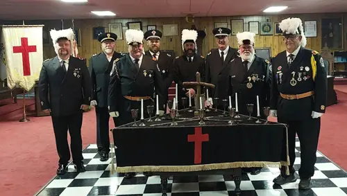
The Knights Templar of South Carolina hold a Christmas Observance every year throughout the state. If you have never attended one, I highly suggest going. They are open to the public & showcase the Christian traditions of this appendant body of Freemasonry.
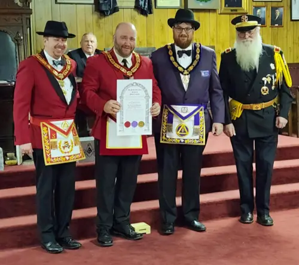
Of the branches of Freemasonry, York Rite has a special place in my heart.
Traveling man at heart
Now I save the wandering for traveling. Backroads & Memories is where I share the road, the stories and the moments worth keeping, with a South Carolina-first spirit.
For our 21st wedding anniversary my wife Trish & I took a 9 day cruise out of Ft Lauderdale Florida (November 2025).
Sunsets in Enoree
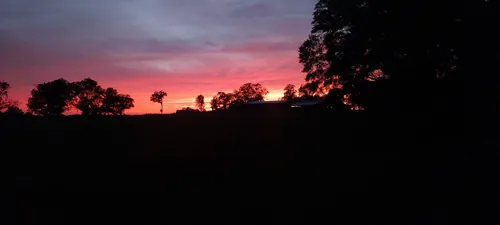
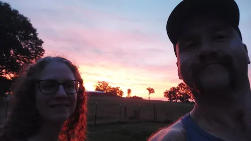
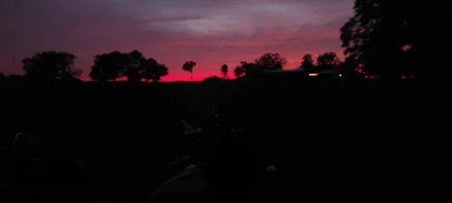

Backroads & Memories
October 2026 Draft pending George
Tagging along with Trish on her work trip to the Tampa Bay area, and a visit to a fellow lodge.
Read more →
July 12 – August 1, 2026 Draft pending George
Enoree, SC to Tucson for Rainbow’s Supreme Session, and home along Route 66: White Sands, Bell Rock, Winslow and the Blue Whale.
Read more →November 2025 Draft pending George
Nine days at sea out of Ft Lauderdale to celebrate 21 years with Trish.
Read more →Masonic travels
Visits to Grand Lodges and lodges around the country.
October 20, 2026 Draft pending George
St. Petersburg, Florida
Visiting as a Brother from Palmetto Lodge No. 19.
Read more →August 1, 2026 Draft pending George
McAlester, Oklahoma
Visiting Rainbow’s international headquarters on the way home from Supreme Session in Tucson.
Read more →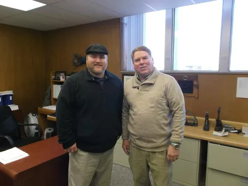
January 2013 (to confirm) Draft pending George
Guthrie, Oklahoma (city to confirm)
Meeting the Grand Secretary of Oklahoma, Steve Singleton.
Read more →Photo gallery
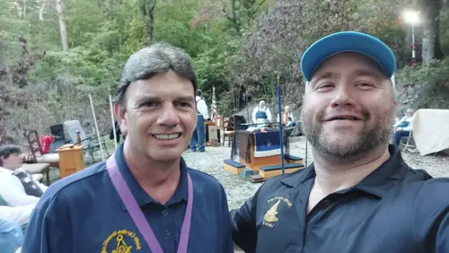
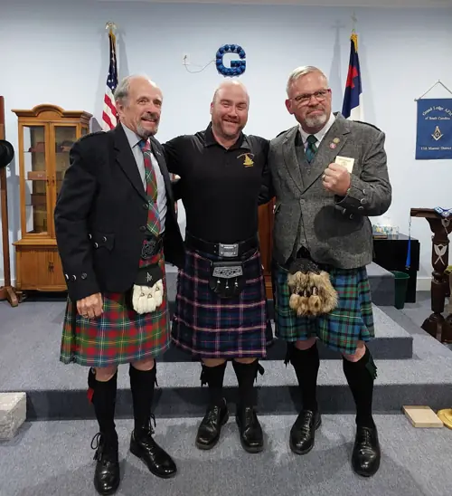
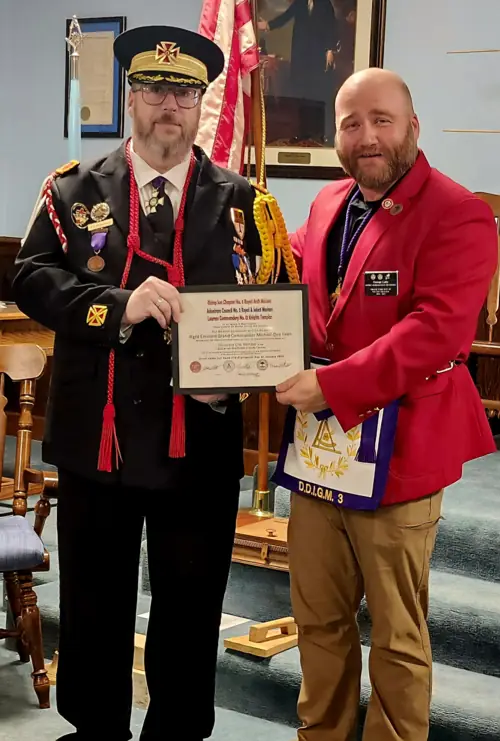

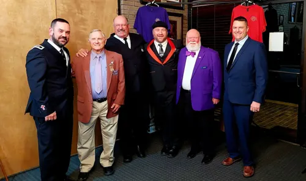
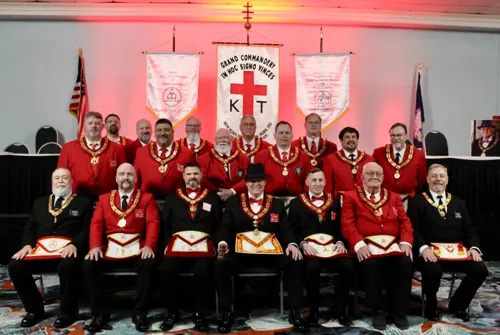
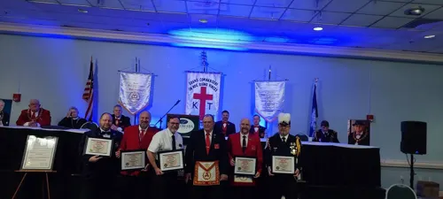
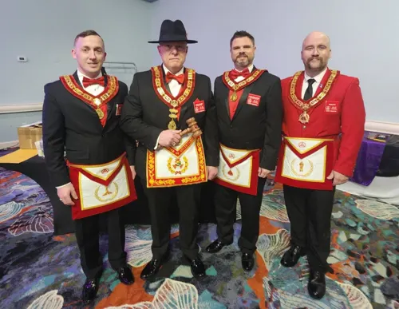
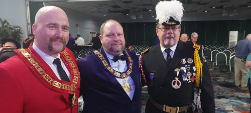
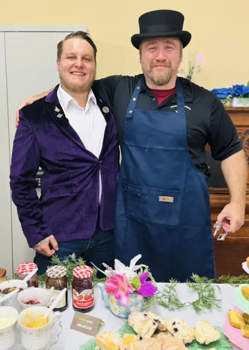
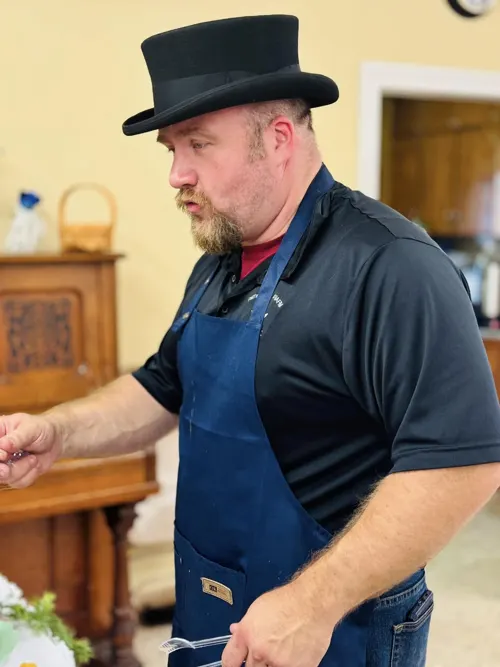